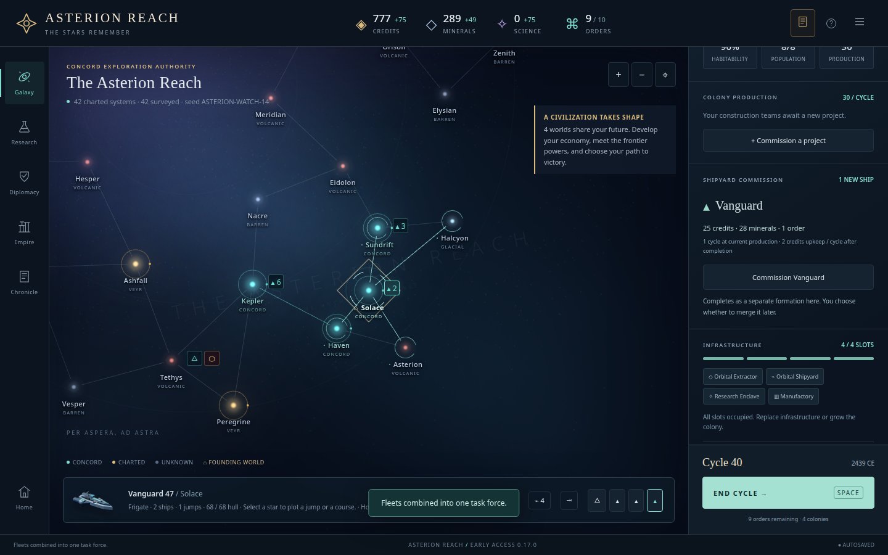
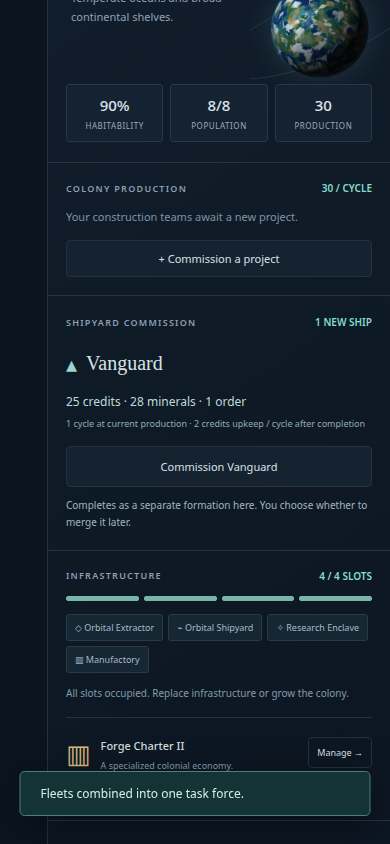
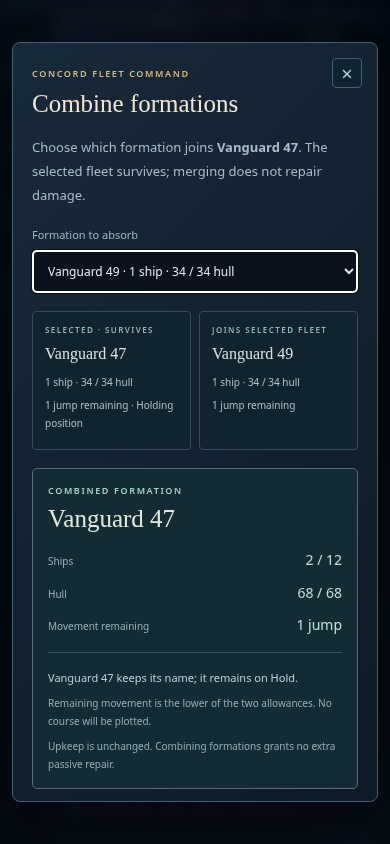
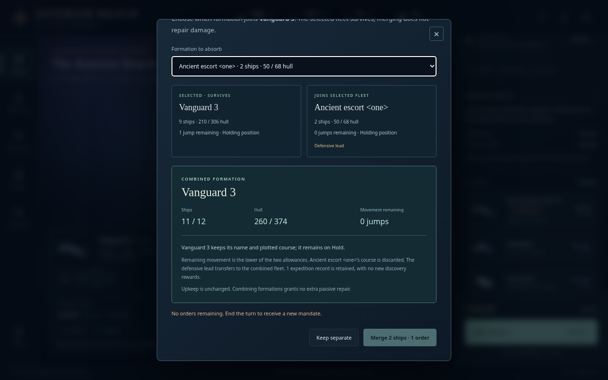
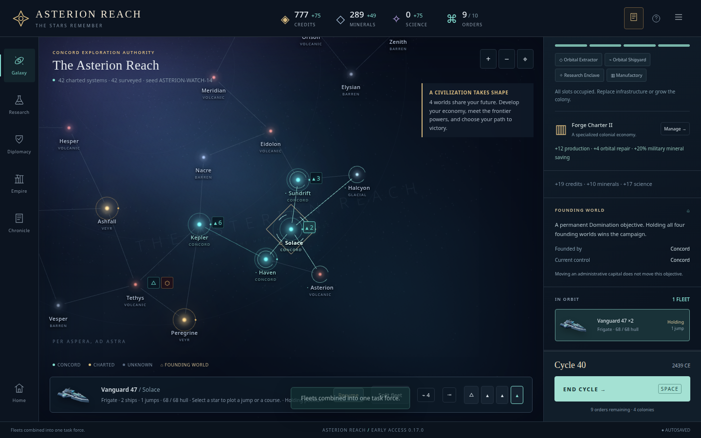

Asterion Reach · Stage18 candidate · independent review of UI written by the other authors
Explicit reinforcement, without hidden automation
Accepted after one narrow flow correction. Ordinary command results remain exact, the next commission is visible after merging, and disabled choices stay readable.
The reviewer authored the pure projection module but did not author the UI, styling or main integration reviewed here. The browser ran at http://127.0.0.1:5203/; this development candidate still displayed version0.17.0. This report does not claim a separate frozen-production browser run.
Actual WATCH40: merge f47 ← f49, then commission a Vanguard at Solace. Exactly2orders,25credits and28minerals. f47 survives held with2ships,68hull and1move. The new queue has26work at30production and creates a separate fleet. At1440/1280/390, both paid UI commands match handwritten ordinary commands; initial acceptance also matches reload and the next complete turn.
Evidence and limits
The original completed campaign file was read unchanged from docs/watch-playtest/checkpoints/cycle40.json (SHA256 bc336a1f56fa49d494914eb249756af9dc3f41a4f260c279064ab8e62393f715). Fresh isolated browser contexts were used. The original WATCH files/profile were never modified. Synthetic chooser cases are explicitly separate from the human campaign; this is not a new balance cohort.
Eight initial cases passed, covering three actual-save viewport runs; a one-order chooser/merge; zero-order chooser at1280/390; a finished campaign; and a single legal partner behind an over-cap candidate. Own same-class/local filtering excludes foreign, remote and scout formations. Keyboard opening, selector changes, focus trapping, Escape restoration, readable disabled outcomes, escaped names, movement/route/Hold/lead/history explanations and viewport containment were checked.
| Initial case | Result |
|---|
| Actual WATCH40 1440px two-command UI acceptance | Pass |
| Actual WATCH40 1280px two-command UI acceptance | Pass |
| Actual WATCH40 390px two-command UI acceptance | Pass |
| Chooser 1440px 1 orders | Pass |
| Chooser 1280px 0 orders | Pass |
| Chooser 390px 0 orders | Pass |
| Chooser 390px ended | Pass |
| Over-cap first partner keeps sole legal merge direct | Pass |
Correction and source phases
The first phase found that selecting/merging from the orbit list left the commission shortcut offscreen despite its improved placement after colony production. At1440 its button was above the viewport (y−58.9); at1280 y−108.9; at390 it was below the viewport (y1035.7). Merely reducing paid clicks did not make the next action discoverable.
The root author changed only post-merge UI focus: when the survivor has an enabled quote at the inspected owned yard, reveal/focus the existing commission panel; otherwise retain surviving-row focus. Three targeted follow-ups passed. The action is now fully visible at1440(y429–470),1280(y379–420),390(y446–487). Tab then Enter commissions exactly one ship, with exact ordinary-command state and reload equality. No duplicate paid action was added.
| Phase | Scope | main.js SHA256 |
|---|
| Initial acceptance | 8cases; full command/next-turn checks at3widths | ef4dd8f869fe00ca9de503f3892596c10a057a8afdc76b018bb20af5fd27185d |
| Immediate opening | 2narrow checks at10/0orders; heading visible, scrollTop0, selector focused | ef4dd8f869fe00ca9de503f3892596c10a057a8afdc76b018bb20af5fd27185d |
| Final correction | 3targeted actual40 merge→visible quote→keyboard commission/reload checks | f2207c3daf86e1f9845b8f318a8a9833f382d5a4a43f1b407baca750cc924912 |
Each run verified its source fingerprints were stable. Only main.js changed between initial acceptance and the final targeted follow-up. Earlier cases are not represented as rerun against the final hash. Root's broader production tests are separate evidence.
Visual inspection

Final1440px: after merge, the existing quote is visible without an additional action.
Final390px: price, duration, separate-formation wording and commission action fit without horizontal overflow.
Initial narrow chooser with zero orders: heading visible, selector focused; outcomes remain readable.
Disabled merge remains inspectable; survivor, movement and historical provenance are explicit.
Earlier phase: inspector remained at the orbit row, leaving the shortcut above the viewport. Corrected by the final focus/scroll follow-up.Raw records and scripts
Initial eight-case record · Two immediate-focus checks · Final three-width follow-up · Initial browser driver · Initial-focus driver · Final flow driver. These measured drivers reference the recorded local worktree/browser paths; they were not modified after measurement.
Pure module commit a76c341; UI module/style commit 44c2591. Main integration was uncommitted during review and is identified by exact content hashes.
| Final inspected source | SHA256 |
|---|
| src/main.js | f2207c3daf86e1f9845b8f318a8a9833f382d5a4a43f1b407baca750cc924912 |
| src/reinforcement.js | a6d7307e21c21de4ab452909c1c58d649355d840bd5a503033e9efc671231bf1 |
| src/reinforcement-ui.js | 3702f77ca3e6815d324d03e4b6394b449fb320eabce9eea8ddfaf859fa843c74 |
| src/reinforcement.css | 9966b1970d56b1037882a1172e7637079495166d897390a2197886ed3679b87e |
| src/game.js | 6e2b5ff93e84019253d1c3c3fdf5cdd8b6a06f74986e18b711b88daff9a9fbaa |
| src/fleet-management.js | 697da0397f170d5fc4a8c85acbf217818fd8219a27eaeace8f15f5de0b707385 |
| src/discoveries.js | 71692463b6033c7ee5f935c7f0edc3cf5c59e91649cb6492ee7d7dd301ef1a7a |
No source changes or campaign mutations outside the isolated browser copies were performed by this review.